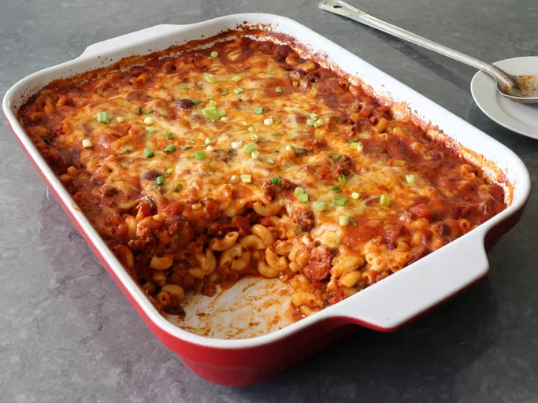

Chili Dog Mac and Cheese
Description
Macaroni and cheese (also known as mac and cheese in Canada and the United States and macaroni cheese in the United Kingdom) is a dish of macaroni pasta and a cheese sauce, most commonly cheddar sauce.
Ingredients
- 1 tablespoon olive oil
- 1 pound ground beef
- 1 large onion, diced
- 1 (28 ounce) can crushed tomatoes (or 3 1/2 cups tomato cups or puree)
- 2 1/2 cups water
- 2 rounded cups elbow macaroni
- 8 ounces shredded white Cheddar cheese
- 8 ounces shredded Monterey Jack cheese
- green onions, sliced, for the top (optional)
Steps
- Add olive oil to a large pot and place over high heat. Add beef; cook and stir, breaking up with a spoon or spatula, about 2 minutes. Add onions and salt, and cook, stirring, until beef is crumbly, and onions turn translucent, about 5 minutes.
- Add the chili powder, cumin, paprika, black pepper, cinnamon, cayenne, dried oregano, and garlic. Cook, stirring, for about 2 minutes.
- Mix Cheddar and Monterey Jack cheeses together in a bowl, and transfer about 60% of cheese to top of chili mixture. Use a spoon to thoroughly mix cheese into the casserole.
- Apply remaining cheese evenly over the top, and lightly poke down into the surface with the tip of a spoon.
- Bake in the preheated oven until bubbly, 30 to 35 minutes. Let rest 15 minutes before serving, topped with green onions.